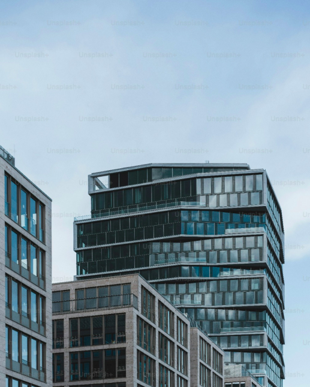

WE HAVE BEEN IN THE AUDIOVISUAL PRODUCTION BUSINESS FOR OVER 15 YEARS
We're proud of our work and would love to share it with you!
Wild nature
Bird Transit. "Turov meadow" Station • 52 min • 4K/2K
If there is a bird's paradise, where is it?
The Pripyat River. Near the city of Turov. This is where a uniquely amazing
phenomenon in the history of the planet took place. People's interests have
become an organic part of the ecosystem. So, there was a new kind of natural
landscape. Its name is floodplain meadow?
Why do migratory birds stop here on their way from South-Western Europe to
North-Eastern Europe and from Africa to Siberia? What do they like here? And
what role does the Turov meadow play in the international migration of hundreds
of thousands of birds?
Watch our film about the life of migratory birds. We shot it from early spring until
late autumn and now we are in a hurry to share these wonderful 4K videos. All
the filming was made in the natural environment and it consists of 100% original
shots that we are really proud of?
Who do we see?
A couple of terns decided to go fishing together, and it's not a hobby...
Beautiful great crested grebes walk on the polished surface of the lake. White-
fronted geese prefer to spend time in small companies, listening to the romances
of a long-billed redshank... A truly surreal picture: a tree, which has about
fifty white storks sitting on it at the same time! Great snipes and ruffs fighting so
hard, the feathers are flying in all directions! An oystercatcher poses for us, while
sitting on its eggs. Also... These wonderful fluffy mallard chicks and brave little
swimmers – coot chicks... All this is very curious and at the same time so cute and
beautiful!
European Bison. "Knight of the old forest" • 52 min • 4K/2K
Just take a look at this giant! It is truly mighty. It has lived in this forest with
hundreds of years old trees for a million years. The bison's kind is so ancient that
nobody doubts its noble ancestry. Its horns are a scary weapon, a retributive
sword for anyone who provokes it?
This is a description of the European bison, but it could have been about a knight
from the middle-ages. When we noticed it, we started to research the bison's life.
And what did we notice?
They really live according to knightly laws?
European bison respect their suzerain, look after their dames, commit great
deeds in her name and always accept invitations to fight?
After herding together, they venture out to the new lands, not to Palestine.
What happened next, you probably already know... Or not?
Well, we are going to tell you this story once again, in our own way, with some
conventionalities, but I bet that you are not going to forget it this time!
Bird Transit. "Winter Harbor" Station • 52 min • 4K/2K
All birds like to eat and are busy looking for food for most of the day.
They fill their tummies up until they can eat no more. And they are
very happy to do so! Seems like nothing special... Is it always like this
here?
The thing is, it's now... Winter! The lake has to be under the ice and
all these birds should be long gone to countries in the south! Why
are they all here?
Thousands of birds have refused to migrate. They are now walking
on the snow and seem to be getting on just fine. So what are these
birds eating? And why can't the ice have covered the lake for more
than 50 years?
The reason is, of course, us. People. Apparently, the local
thermoelectric power station has been dumping hot water in this
lake. It has completely ruined the laws of nature! More than that, it
has changed the animals! In the winter, life is still in full steam and it
means that the birds always have food. How will this unusual
experiment end?
Culture & Art
All For The Sake Of Spring. • 52 min • 4K/2K
Imagine stepping into a grand dance theater, the air buzzing with anticipation. The lights dim, and a hush falls over the audience. Suddenly, the stage comes alive with a burst of color and movement. Dancers glide effortlessly across the floor, their bodies telling a story of passion, struggle, and triumph. Each leap and turn is executed with precision and grace, drawing the audience deeper into the narrative?
The performance is a mesmerizing blend of classical ballet and contemporary dance, set to a hauntingly beautiful score that echoes through the theater. The dancers' expressions are intense, their movements fluid and powerful, creating a visual symphony that captivates and enchants. The choreography is innovative, pushing the boundaries of traditional dance and exploring new realms of artistic expression?
As the performance reaches its climax, the energy in the room is palpable. The dancers move in perfect harmony, their bodies a testament to the hours of dedication and practice. The final scene is a breathtaking display of skill and emotion, leaving the audience in awe. The curtain falls, and the theater erupts in applause, a standing ovation for a performance that will be remembered long after the lights come back on.
About Us
The General Producer Center is a cutting-edge international company specializing in video production.
For over 15 years, we have been creating content for TV channels, OTT platforms, banks, large corporations, as well as international and public organizations.
Our continuous evolution focuses not only on increasing production volumes but also on integrating new technologies, enhancing creative and technical capabilities, and aligning with the latest international trends.
15 years
100 clients
6000 hours of content

Let's work together
Leave your inquiry and our managers will reach out to you shortly!